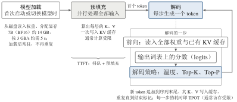
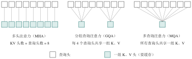
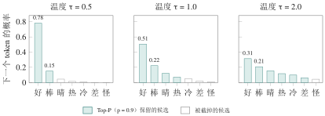

3.9 推理原理：模型怎样逐个生成 token
训练好的模型参数固定了，用户发来一个问题，模型内部发生了什么？为什么回答总是一个字一个字地往外蹦，为什么“支持 128K 上下文”的模型在自己的显卡上开不了那么长？本节从自回归生成讲起，把一次请求拆成加载、预填充、解码三个阶段，估算推理需要的显存，最后讲每一步怎样从概率分布中选出下一个 token。结论是：回答有多少个 token，就要串行做多少次前向计算；推理显存 = 权重 + KV 缓存 + 开销，长上下文和多用户时 KV 缓存可能超过权重；温度、Top-K、Top-P 等解码策略决定了回答是保守还是多样。
3.9.1 自回归生成
与预训练目标式 （3-1） 相对应，大语言模型自回归地生成文本：每次根据输入和已经生成的内容，算出下一个 token 的概率分布，从中选出一个 token 接到序列末尾，再预测下一个： \[y_t\sim P_\theta(\cdot\mid\boldsymbol{x},y_1,\dots,y_{t-1}),\qquad t=1,2,\dots \tag{3-34}\] 直到生成表示结束的特殊 token，或达到设定的最大输出长度。“\(\sim\)”表示从分布中选出一个 token，具体怎么选由第 3.9.5 小节的解码策略决定。可见，除去处理输入的那一次前向，回答有多少个 token，解码阶段就要做多少次前向计算，而且只能一个接一个地串行进行：第 \(t\) 个 token 必须等前 \(t-1\) 个生成之后才能算。这是大模型回答“一个字一个字往外蹦”的原因，也是推理优化面临的核心约束。
3.9.2 一次请求的三个阶段
一次完整的推理请求分为三个阶段（图 3-19）。
模型加载 发生在首次启动、切换模型或模型已被系统卸载之后。推理引擎识别模型结构、读取权重文件并分配内存，根据模型大小、磁盘速度和框架设置，可能需要几秒到几十秒：BF16 的 7B 模型约 14 GB，从读速约 3 GB/s 的固态硬盘加载，仅读文件就要约 5 秒。加载后权重常驻显存（或苹果芯片等设备的统一内存），后续请求不必重复加载。但“已经在内存中”不等于读取权重没有开销：GPU 执行每一层计算时，仍要把该层的权重和缓存从显存读入计算单元，这段通路的速度受内存带宽和访问效率限制，在解码阶段尤为关键。
预填充 预填充（prefill）集中处理全部输入 token，计算它们在每一层的中间状态，建立初始的 KV 缓存（见下一小节），并给出第一个输出 token。输入 token 全部已知，可以高度并行地处理；计算形态接近“矩阵乘矩阵”，一次读取的权重同时服务成百上千个 token，因此容易发挥 GPU 的矩阵计算能力，通常计算受限。计算量约为每个输入 token \(2N\) 次运算，例如 7B 模型处理 2000 个 token 的提示约需 \(2\times(7\times10^{9})\times2000=2.8\times10^{13}\) 次运算，有效算力 100 TFLOP/s 时约 0.28 s。衡量指标是首 token 延迟（Time To First Token，TTFT）——从发出请求到看到第一个输出 token 的时间，以及预填充速度——每秒处理的输入 token 数，一些推理工具称为 prompt eval rate。
解码 解码（decode，也称生成阶段）从第一个输出 token 开始逐个预测，直到结束标记或最大长度。单个请求每一步只生成一个新 token，却要完成一轮完整的前向计算；计算形态接近“矩阵乘向量”，为了这一个 token，GPU 要把全部权重和不断增长的 KV 缓存从显存读一遍；并行度低，计算单元大部分时间在等数据，因此通常访存受限。每读取一个 16 位参数（2 字节）只做一次乘法和一次加法，算术强度约 1 FLOP/byte，远低于 GPU 约数百 FLOP/byte 的拐点——Roofline 模型中访存受限与计算受限的分界点（第 4.1.3 小节）。于是得到单请求解码速度的上限： \[\text{解码速度（token/s）}\lesssim\frac{\text{有效内存带宽（GB/s）}}{\text{每生成一个 token 需读取的数据量（GB）}}, \tag{3-35}\] 分母约为权重大小加 KV 缓存大小。例如 FP16 的 7B 模型约 14 GB，在显存带宽约 1 TB/s 的 RTX 4090 上，单请求解码上限约 \(1000\div14\approx70\) token/s；量化到 4 位（约 4 GB）后，上限提高到三倍以上。这也说明量化不仅让模型“放得下”，还让它“跑得快”。衡量指标是每 token 输出时间（Time Per Output Token，TPOT），即相邻两个输出 token 的平均间隔，以及输出速度（output token/s，约等于 \(1/\mathrm{TPOT}\)）。
一次请求的端到端延迟可以写成 \[t_{\text{总}}\approx\mathrm{TTFT}+(n-1)\times\mathrm{TPOT}, \tag{3-36}\] \(n\) 为输出 token 数。“半天不开口、开口以后很快”，往往是提示很长、预填充耗时多（TTFT 大）；“马上开始回答、但一个字一个字很慢”，往往是解码受限于内存带宽（TPOT 大）。业界常用“预填充看算力，解码看带宽”概括两个阶段的瓶颈；两阶段的硬件分析见第 4.4.1 小节。

图 3-19 一次推理请求的三个阶段。模型加载只在首次启动或切换模型时发生；预填充并行处理输入并给出第一个 token；解码阶段反复执行“前向—解码策略—追加”，每步只生成一个 token。两阶段在硬件上的表现见第 4 章图 4-9
3.9.3 KV 缓存与分组查询注意力
生成新 token 时，模型要用当前位置的查询向量 \(\boldsymbol{q}_t\) 与所有历史位置的键向量计算相关性，再按相关性读取对应的值向量。由于因果掩码，历史 token 的 \(\boldsymbol{k}_i\)、\(\boldsymbol{v}_i\) 一旦算出就不再改变；若每步都从头重算，生成 \(n\) 个 token 要处理约 \(n^2/2\) 个 token。推理框架因此把每层历史 token 的 K、V 保存在显存里，称为 KV 缓存（Key-Value Cache）：预填充时一次性建立，解码时读取并为每个新 token 追加一项。它保存的是注意力计算中可复用的中间结果，不是现成的答案。KV 缓存的机制、显存管理（如 PagedAttention：像操作系统分页那样按固定大小的块分配 KV 缓存，减少显存碎片）与并发分析由第 4.4.2 小节详细讨论，大小按第 4 章式 （4-7） 计算： \[M_{\mathrm{KV}}\approx2\times L\times H_{\mathrm{KV}}\times d_{\mathrm{head}}\times T\times B\times b_{\mathrm{KV}},\] 系数 2 对应 K 和 V，\(H_{\mathrm{KV}}\) 为 KV 头数，\(T\) 为序列长度（输入加输出），\(B\) 为同时驻留的请求数，\(b_{\mathrm{KV}}\) 为每个数值的字节数。例如某 27B 级模型有 64 层、8 个 KV 头、每头 128 维，以 BF16 缓存，一个 2000 token 的请求需要 \(2\times64\times8\times128\times2000\times2\approx5.24\times10^{8}\) 字节，约 0.52 GB。KV 缓存的大小不能只看 token 数，还取决于层数、KV 头数、每头维度、缓存精度和同时驻留的请求数。
公式里的 \(H_{\mathrm{KV}}\) 由模型的注意力结构决定（图 3-20）。标准的多头注意力（Multi-Head Attention，MHA）中，每个查询头都有自己的一组 K、V，KV 头数等于注意力头数。为了缩小 KV 缓存，可以让多个查询头共享同一组 K、V：所有查询头共享一组，称为多查询注意力（Multi-Query Attention，MQA）；查询头分成若干组、每组共享一组，称为分组查询注意力（Grouped-Query Attention，GQA）[45]。例如 8 个查询头分成 2 组、每组 4 个共享一组 K、V，KV 头数就是 2，缓存缩小到 MHA 的 1/4。GQA 在效果与缓存大小之间取得了较好的平衡，Llama 2-70B、Llama 3、Qwen2 及以后的 Qwen 系列等主流模型都采用它。

图 3-20 三种注意力的 K、V 头数（以 8 个查询头为例）。KV 缓存的大小与 KV 头数成正比：GQA 在本例中把缓存缩小到 MHA 的 1/4，MQA 缩小到 1/8
3.9.4 推理要多少显存
判断一个模型能否在某台设备上运行，可以按下式粗估显存（或统一内存）： \[M_{\mathrm{infer}}\approx\underbrace{N\times b_w}_{\text{权重}}+\underbrace{M_{\mathrm{KV}}}_{\text{式\,（4-7）}}+\underbrace{(10\%\sim20\%)\times(\text{前两项之和})}_{\text{激活值与框架开销}}, \tag{3-37}\] \(b_w\) 为每个权重的字节数（FP16/BF16 为 2，INT8 为 1，4 位约 0.5）。估算流程见图 3-21。
例 3-9 70B 模型的推理显存
Llama 2-70B 有 80 层、64 个注意力头、每头 128 维（隐藏维度 \(d=8192\)），采用 GQA，共 8 个 KV 头。以 FP16 推理，同时服务 10 个用户，每人支持 32K 上下文，开销按前两项之和的 10% 计。分别按“不用 GQA”（把隐藏维度 8192 全部当作 KV 维度）和“实际的 GQA”估算推理显存。
1 & 权重 & \(70\times10^{9}\times2\) & 140 GB & FP16 每参数 2 字节
2a & 每 token KV（不用 GQA） & \(2\times80\times8192\times2\) & 2 621 440 B & K、V 两份 × 80 层 × 64 头 × 128 维 × 2 字节
3a & KV 总量（不用 GQA） & \(2\,621\,440\times32\,768\times10\) & 859 GB & 32K 取 32 768，10 个用户
4a & 开销 & \((140+859)\times10\%\) & 99.9 GB & 按前两项之和的 10%
5a & 合计（不用 GQA） & \(140+859+99.9\) & 约 1099 GB & 步骤 1、3a、4a
2b & 每 token KV（GQA） & \(2\times80\times8\times128\times2\) & 327 680 B & KV 头数是 8，不是 64
3b & KV 总量（GQA） & \(327\,680\times32\,768\times10\) & 107 GB & 为 3a 的 1/8
5b & 合计（GQA） & \((140+107)\times1.1\) & 约 272 GB & 需要 4 张 80 GB 显卡
数据流向配置文件给出层数、KV 头数、每头维度 → 每 token 的 KV → 乘上下文长度与用户数 → 加权重 → 乘 1.1 加开销。 这道题按不同口径会得到三个答案。(a) 把“32K”取为 \(32\,000\)：KV 为 \(2\,621\,440\times32\,000\times10\approx839\,\text{GB}\)，合计 \((140+839)\times1.1\approx1077\,\text{GB}\)。(b) 取 \(32\,768\)：如上表约 1099 GB。(c) 另一种常见结果“KV 约 800 GB、合计约 1034 GB”：\(2\,621\,440\times32\,768\times10\) 字节恰好是 800 GiB（除以 \(1024^{3}\)），却与以 \(10^{9}\) 计的 140 GB 权重直接相加，单位混用，所以偏小。本书 GB 一律按 \(10^{9}\) 字节计，因此取 (b)；若事先约定 32K = 32 000，取 (a)。更重要的是，真实的 Llama 2-70B 用 GQA，按 MHA 计算会把 KV 缓存高估 8 倍：此时 KV 缓存（859 GB）远超权重本身，而 GQA 下只有 107 GB。
辨析
长上下文不是免费的。KV 缓存与上下文长度、并发用户数都成正比。一个模型“支持 128K 上下文”，只说明它在训练和结构上能处理这么长的输入，不意味着在你的显卡上能以 128K 同时服务很多人。估算推理显存时必须同时考虑权重和 KV 缓存，并且用 KV 头数而不是查询头数代入。
3.9.5 解码策略：怎样选出下一个 token
模型每一步输出的是词表上的一个概率分布。“如何从分布中选出下一个 token”称为解码策略，它直接影响生成文本的质量和风格。这里的“解码”指选 token 的方法，与解码器（模型结构）、解码阶段（运行阶段）都不是一回事。
贪心解码与束搜索 贪心解码（greedy decoding）每步选概率最大的 token： \[y_t=\arg\max_{y}P(y\mid\boldsymbol{x},y_{<t}).\] 它简单、结果确定，但每步的局部最优不保证整体最优，还容易陷入重复。束搜索（beam search）每步保留累计概率最高的 \(k\) 个候选序列（\(k\) 称为束宽），最后选累计概率最高的序列，常用于机器翻译等有较明确标准答案的任务。在开放式生成中，这两种确定性方法生成的文本往往平淡、重复。
温度采样 对话等开放式生成通常按概率随机采样。设模型最后一层输出的未归一化分数（logits）为 \(z_i\)，引入温度（temperature）\(\tau\) 后，各 token 的采样概率为 \[p_i=\frac{\exp(z_i/\tau)}{\sum_j\exp(z_j/\tau)}. \tag{3-38}\] 如图 3-22，\(\tau<1\) 时分布变“尖”，高概率 token 更占优势，输出更保守、确定；\(\tau>1\) 时分布变“平”，低概率 token 机会增加，输出更多样，也更容易出错；\(\tau\to0\) 时等价于贪心解码。

图 3-22 温度对下一个 token 分布的影响，以及 Top-P 截断（“今天天气很”的候选，示意数据）。\(\tau=1\) 时为模型原始分布；\(\tau\) 越低分布越尖、保留的候选越少，\(\tau\) 越高分布越平、保留的候选越多
Top-K 与 Top-P 采样 纯随机采样可能抽到概率极低、明显不合理的 token，因此通常先截断候选范围，再在剩余候选中重新归一化后采样。Top-K 采样只保留概率最高的 \(k\) 个 token。Top-P 采样（也称核采样，nucleus sampling）[46]把 token 按概率从高到低排序，保留累积概率刚好达到阈值 \(p\) 的最小集合： \[\mathcal{V}^{(p)}=\arg\min_{\mathcal{V}'}\lvert\mathcal{V}'\rvert\quad\text{满足}\ \sum_{y\in\mathcal{V}'}P(y\mid\boldsymbol{x},y_{<t})\ge p. \tag{3-39}\] 在图 3-22 中，\(p=0.9\) 时，\(\tau=0.5\) 只保留 2 个候选（\(0.78+0.15=0.93\ge0.9\)），\(\tau=1.0\) 保留 4 个，\(\tau=2.0\) 保留 6 个。
辨析
Top-K 与 Top-P 都是“先截断再采样”，区别在截断的依据。Top-K 按个数截断，\(k\) 固定，不能适应分布形状：分布很集中时，\(k\) 个候选里可能混入不合理的选项；分布很分散时，又可能截掉合理的选项。Top-P 按累积概率截断，候选数随分布自适应：模型很确定时只留一两个，不确定时留得多。两者可以同时使用，此时取二者的交集。温度则不截断，只改变分布的形状，通常先施加温度再做截断。
此外常用的控制手段还有重复惩罚（降低已出现 token 的概率，避免车轱辘话）、最大输出长度和停止词。表 3-13 给出了不同任务的一般经验。
表 3-13 不同任务下解码参数的一般经验
| 任务 | 推荐策略 | 典型设置 | 原因 |
|---|---|---|---|
| 数学、代码、信息抽取 | 贪心或低温采样 | \(\tau=0\)～\(0.3\)（实现中常以 \(\tau=0\) 表示贪心） | 需要确定、准确的结果 |
| 日常问答、对话 | 适中温度 + Top-P | \(\tau\approx0.7\)，\(p\approx0.9\) | 兼顾准确与自然 |
| 创意写作、头脑风暴 | 较高温度 + Top-P | \(\tau\approx0.9\)～\(1.2\)，\(p\approx0.95\) | 需要多样性和新意 |
| 机器翻译 | 束搜索 | 束宽 4～5 | 有较明确的最优译文 |
本节要点
自回归生成：输出多少 token 就串行做多少次前向；端到端延迟 \(\approx\mathrm{TTFT}+(n-1)\mathrm{TPOT}\)。
预填充并行、计算受限，决定 TTFT；解码逐 token、访存受限，速度上限 ≈ 带宽 ÷ 每步读取量。
推理显存 ≈ 权重 + KV 缓存 + 10%～20% 开销；KV 头数用错、GB/GiB 混用是最常见的错误。
温度改变分布形状，Top-K 按个数截断，Top-P 按累积概率截断。
案例进度：课程问答用较低温度（如 \(\tau=0.3\)）加 Top-P，降低随机性，让讲解更稳定。